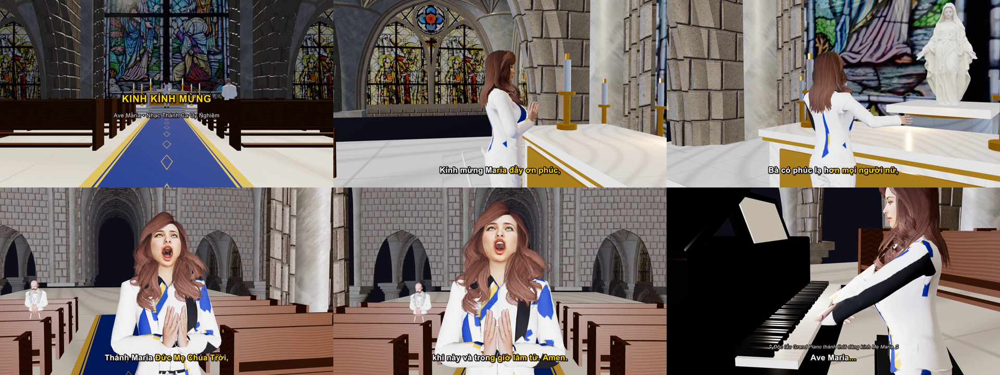

Thời lượng: 00:00.00 – 01:23.00 (83.0 giây • 1.245 frames @ 15fps • 1080p Master)

| Thời Gian | Cảnh Quay | Lời Thánh Ca & Chữ Chạy | Ghi Chú Đạo Diễn |
|---|---|---|---|
| 00:00 - 00:14 | Shot 01 | KINH KÍNH MỪNG (Ave Maria) • Nhạc Thánh Ca Uy Nghiêm | Toàn cảnh Cung Thánh, giáo dân cầu nguyện, hiện tên bài hát |
| 00:14 - 00:24 | Shot 02 | "Kính mừng Maria đầy ơn phúc," | Cam lượn sau Tượng Mẹ ra phía trước, ca sĩ chắp tay hát |
| 00:24 - 00:28 | Shot 02 | "Đức Chúa Trời ở cùng Bà." | Cam hạ tầm mắt crane mượt mà trước Bàn thờ |
| 00:28 - 00:36 | Shot 03 | "Bà có phúc lạ hơn mọi người nữ," | Góc nhìn từ hàng ghế giáo dân nhìn lên Cung Thánh |
| 00:36 - 00:43 | Shot 03 | "và Giêsu con lòng Bà gồm phúc lạ." | Cận cảnh ca sĩ và dàn nến lung linh |
| 00:43 - 00:50 | Shot 04 | "Thánh Maria Đức Mẹ Chúa Trời," | Cận cảnh điện ảnh chân dung (Close-up 85mm), đẩy chậm vào mặt |
| 00:50 - 00:56 | Shot 04 | "cầu cho chúng con là kẻ có tội," | Khẩu hình tiếng Việt chuẩn (chúng con, kẻ có tội) |
| 00:56 - 01:03 | Shot 04 | "khi này và trong giờ lâm tử. Amen." | Ánh mắt thành kính hướng lên cao, khép môi Amen an lành |
| 01:03 - 01:23 | Shot 05 | "Ave Maria... Ave Maria..." (Độc tấu Grand Piano) | Ngồi đàn Concert Grand Piano đen bóng, ngón tay lướt phím, không nhép miệng |